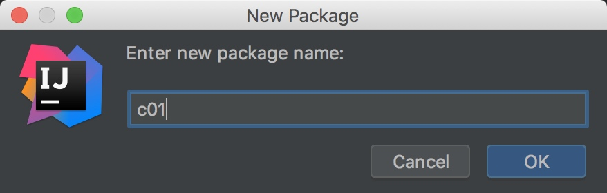
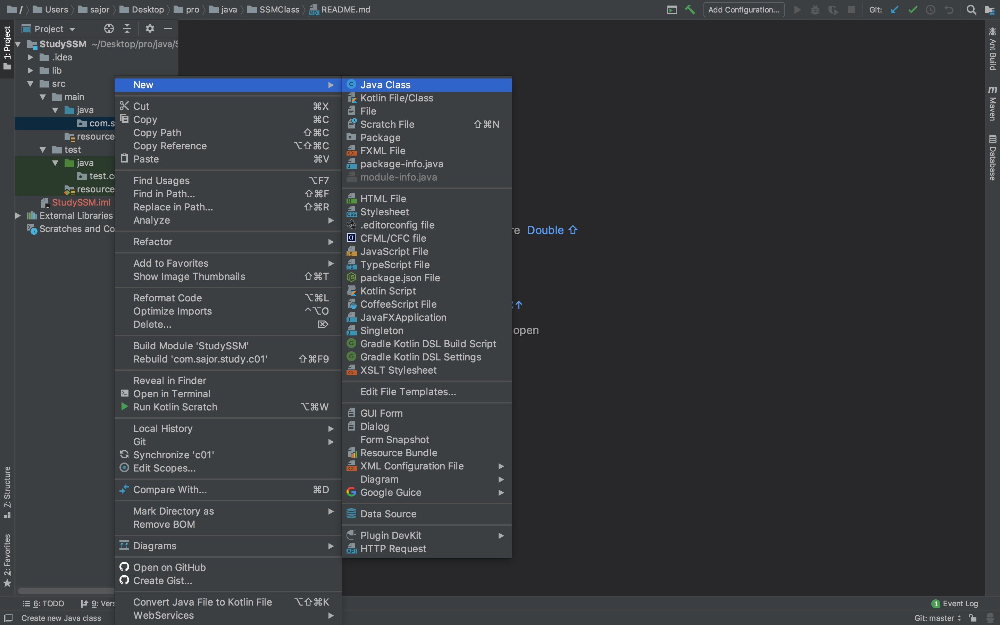
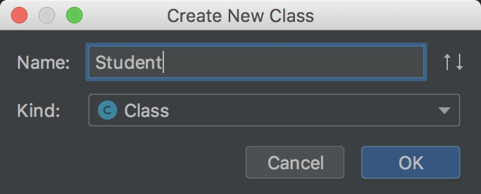
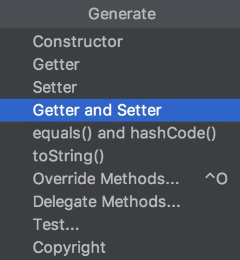
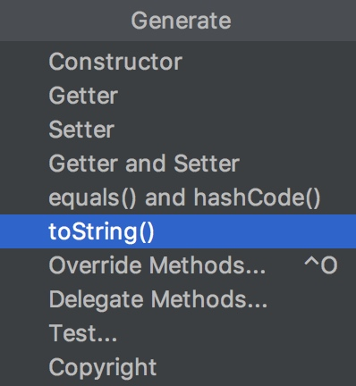
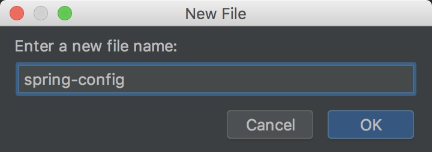
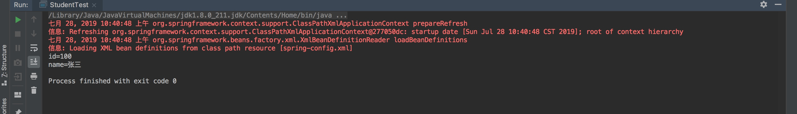

1、新建一个包 com.sajor.study.c01
打开开发工具 Intellij IDEA，打开之前创建的工程右键 src>main>java>com.sajor.study，点击 New>Package

创建包 c01

2、新建一个 Student 类
右键 src>main>java>com.sajor.study.c01，点击 New>Java Class

创建Student类

Student 类包含 4 个属性
package com.sajor.study.c01;
public class Student {
private int id;
private String name;
private String sex;
private String email;
}
使用 IDEA 代码生成器，帮助生成属性的 getter，setter 方法 点击菜单 Code>Genetater...

选择 Getter and Setter

选择全部属性(按住 control，鼠标点击)，点击 ok。

生成 Student 类
package com.sajor.study.c01;
public class Student {
private int id;
private String name;
private String sex;
private String email;
public int getId() {
return id;
}
public void setId(int id) {
this.id = id;
}
public String getName() {
return name;
}
public void setName(String name) {
this.name = name;
}
public String getSex() {
return sex;
}
public void setSex(String sex) {
this.sex = sex;
}
public String getEmail() {
return email;
}
public void setEmail(String email) {
this.email = email;
}
}
再次使用 IDEA 代码生成器，帮助生成对象的toString方法 点击菜单 Code>Genetater...

重写 toString 方法
@Override
public String toString() {
StringBuffer stringBuffer = new StringBuffer();
stringBuffer.append("id=");
stringBuffer.append(id);
stringBuffer.append("\n");
stringBuffer.append("name=");
stringBuffer.append(name);
return stringBuffer.toString();
}
完整的 Student 代码:
package com.sajor.study.c01;
public class Student {
private int id;
private String name;
private String sex;
private String email;
@Override
public String toString() {
StringBuffer stringBuffer = new StringBuffer();
stringBuffer.append("id=");
stringBuffer.append(id);
stringBuffer.append("\n");
stringBuffer.append("name=");
stringBuffer.append(name);
return stringBuffer.toString();
}
public int getId() {
return id;
}
public void setId(int id) {
this.id = id;
}
public String getName() {
return name;
}
public void setName(String name) {
this.name = name;
}
public String getSex() {
return sex;
}
public void setSex(String sex) {
this.sex = sex;
}
public String getEmail() {
return email;
}
public void setEmail(String email) {
this.email = email;
}
}
3、在 Spring 配置文件中声明 Bean
右键 src>main>resources，点击 New>XML Configuration File>Spring Config

新建一个 spring-config.xml 文件, 点击 ok

在 srping-config.xml 中声明 bean
<?xml version="1.0" encoding="UTF-8"?>
<beans xmlns="http://www.springframework.org/schema/beans"
xmlns:xsi="http://www.w3.org/2001/XMLSchema-instance"
xsi:schemaLocation="http://www.springframework.org/schema/beans http://www.springframework.org/schema/beans/spring-beans.xsd">
<bean id="student" class="com.sajor.study.c01.Student" ></bean>
</beans>
4、新建一个测试包 c01
右键 src>test>java>test.com.sajor.study，点击 New>Package，新建包 c01，新建一个测试类，获得 student 对象
右键 src>test>java>text.com.sajor.study.c01，点击 New>Java Class，新建 StudentTest 类

在 StudentTest 中:
1)实例化 Spring 容器
2)获得 student 对象
3)调用 student 对象的 toString()方法
package test.com.sajor.study.c01;
import com.sajor.study.c01.Student;
import org.springframework.context.ApplicationContext;
import org.springframework.context.support.ClassPathXmlApplicationContext;
public class StudentTest {
public static void main(String[] args) {
// 1、实例化 spring 容器
ApplicationContext ac = new ClassPathXmlApplicationContext("spring-config.xml");
// 2、获得 student 对象
Student s = (Student) ac.getBean("student");
s.setId(100);
s.setName("张三");
// 3、调用 student 对象的 toString 方法
System.out.println(s.toString());
}
}
6、运行测试类
右键 StudenTest 类，点击 Run 或 Debug StudentTest.main()

运行结果

本文由 Sajor
创作，采用 知识共享署名4.0 国际许可协议进行许可
本站文章除注明转载/出处外，均为本站原创或翻译，转载前请务必署名
最后编辑时间为: 2019-07-28T00:42:52+08:00